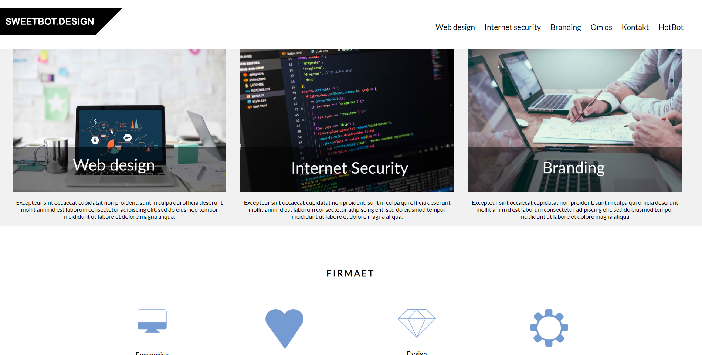
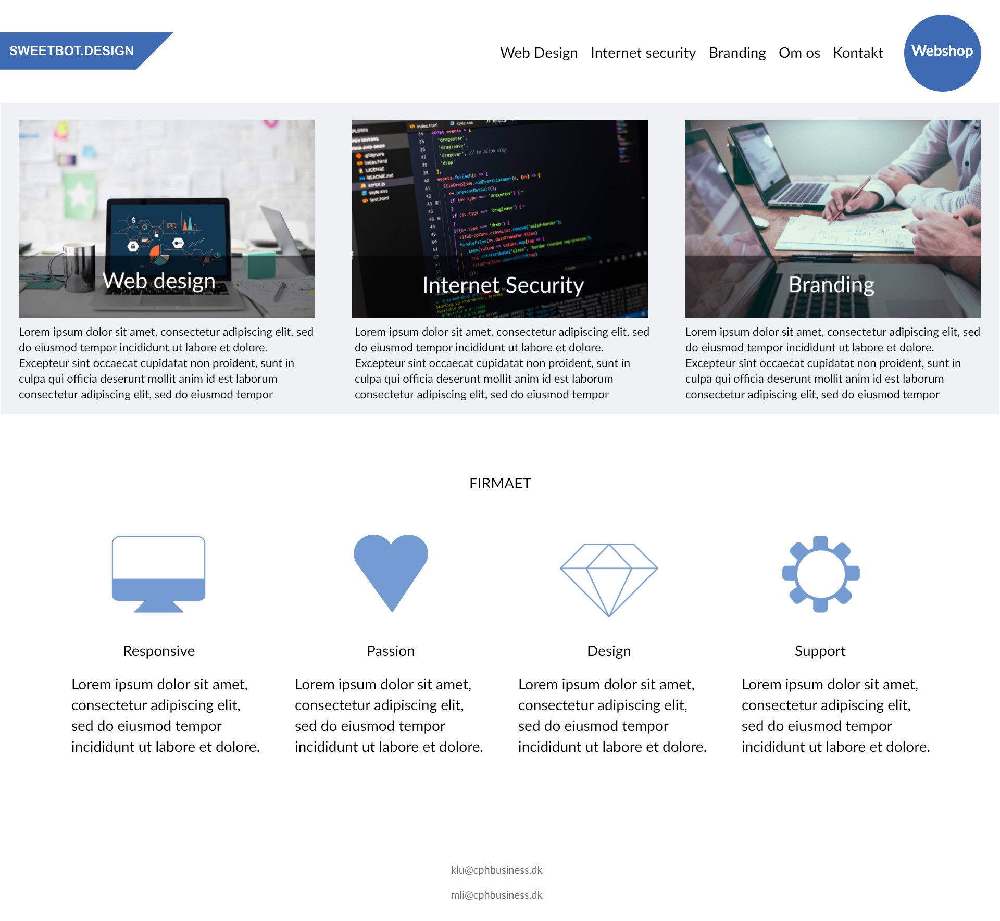

My Projects

Introduktion til projektet
Opgaven var at skabe en dansk hjemmeside for et internationalt orienteret firma – vi skulle udover det følge en style guide og komme med vores eget bud på en løsning. Hjemmesiden skulle være optimeret til mobile enheder og Jquery skulle være med i løsningen. Deres e-commerce Hotbot skulle samtidig have et nyt logo og iconer som vi skulle skabe i grupperne. Derudover så skulle der selvfølgelig også indgå brugertest af sitet. Hent opgave beskrivelsen her. Tryk her for at læse min afleveringsrapport til opgaven
Klik her for at besøge vores gamle Sweetbot hjemmeside
Tryk her for at læse min afleveringsrapport til opgaven

Redesign af Sweetbot
Da vi havde afleveret opgaven fik vi senere hen mulighed for at redesigne hjemmesiden igen. Det vi gjorde på vores besøg tilbage til opgaven var først og fremmest at 'stramme' lidt om på en masse små ting på siden, såsom at gøre alle iconerne visuelt lige store, gøre vores Webshop side mere forstålig og tydelig og få vores side til at have et lidt bedre gennemgående farvemønstre.
Der var selvfølgelig meget forskel på hvor meget vi strammede op på hver side, men vi optimeret dem alle til at have en bedre og nemmere brugeroplevelse. På undersiderne fjernede vi store og unødvendige billeder og kontaktsiden gjorde vi også mere personlig og imødekommende ved at sætte det tydeligere op.
Hent den nuværende version af Sweetbot siden her som pdf.
